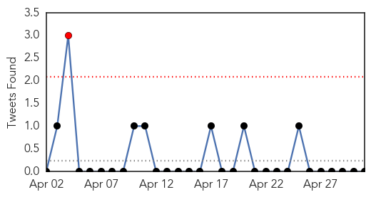
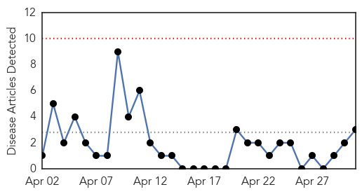
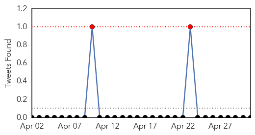
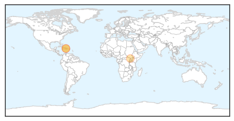

Ebola
30-Day Web Trend
0 alerts, 4 warnings

30-Day Twitter Trend
1 alerts, 0 warnings

Article Locations

Article Confidences

Top Articles:
- 1.000
- Frontline reflections on Guinea's battle against Ebola
- 1.000
- Ebola outbreak under control, says Guinea president
- 1.000
- Ebola outbreak under control, says Guinea president – BorneoPost Online
- 1.000
- Ebola outbreak under control: Guinea president
- 1.000
- Ebola Outbreak Under Control per Guinea President
- 0.994
- Canadians not warned about dangers of Ebola virus
Top Tweets:
-
No tweets found for May 01, 2014
Cholera
30-Day Web Trend
0 alerts, 0 warnings

30-Day Twitter Trend
2 alerts, 0 warnings

Article Locations
Article Confidences

Top Articles:
Top Tweets:
- 0.711
- Anyone have a copy of the UN 10 year plan for Haiti water supply improvement? cholera